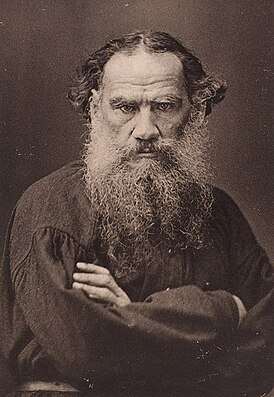
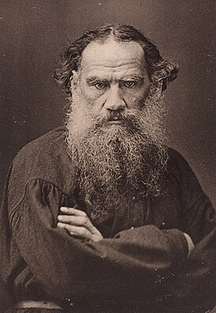

1. Высыпаться. Недостаток сна и отдыха усугубляет депрессию. Необходимо обеспечить себе не менее 8 часов сна в сутки. Для полноценного восстановления засыпать нужно до 23:00 в тишине и полной темноте при температуре 20-22 градуса Цельсия. Важно, чтобы постель была удобной и позволяла телу максимально расслабиться. Чтобы воздух не застаивался, необходимо обеспечить в спальне хорошую вентиляцию, тогда просыпаться станет легче.
2. Отдыхать. Ритм жизни современного человека больше похож на гонку, мы много работаем и мало отдыхаем. Это приводит к истощению организма. При депрессии необходимо больше отдыхать, совмещая пассивный отдых с активным. Очень хорошо помогают медитации, основанные на глубоком дыхании и визуализации красивых образов.
3. Сменить обстановку. Часто, чтобы выйти из депрессии, достаточно сменить обстановку: сделать дома перестановку мебели, отправиться в путешествие, начать ходить в театр и на выставки, изучить новые маршруты, изменить образ жизни.
4. Сменить окружение. Общество оказывает на нас большое влияние. Общение с депрессивными, недовольными жизнью людьми приводит к состоянию депрессии. Старайтесь общаться с активными, жизнерадостными и счастливыми людьми. Чтобы познакомиться с новыми интересными людьми, можно пойти на какое-нибудь обучение, вступить в клуб по интересам.
5. Увеличить физическую активность. Психологическое состояние напрямую связано с физической активностью. Умеренные нагрузки улучшают настроение. Начать можно с обычной зарядки и небольших пробежек, еще лучше пойти в спортивный клуб, заняться танцами или йогой в группе. Это не только даст физическую нагрузку, но одновременно позволит сменить обстановку и окружение.